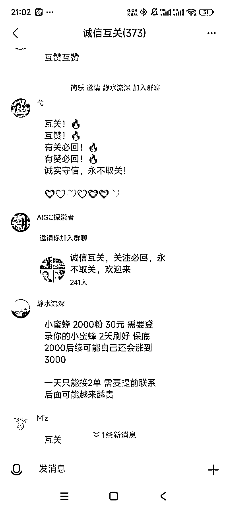

来源：https://gvxw3bca93.feishu.cn/docx/UiRfdc3uFoKkoHxEJ4Fc05mPnJf
大家好，我是拓荒，7年游戏开发程序，深圳某上市游戏公司高级游戏开发程序员，加入生财有术快四年了，一直坚持刷生财的精华帖，风向标提升自己的视野和认知。
基于程序员35岁职业危机，一直也在探索各种副业，但基本都没有能拿得出手的结果。这次刚好是看到风向标里面的小蜜蜂项目加上我朋友的助推，才跑通了这个小项目(文末附自动关注安装包)。
这是第一次在生财发贴，写的有不够清楚的地方还请大家多多谅解！
项目起于12月初刷风向标的时候发现了网易新推出了一款对标小红书的软件。其界面和功能与小红书，从频道标签的布局到个人主页的展示，再到消息中心的图标，“感觉相似度95%，哦不能说相似，只能能说简直一模一样”。
就是这个（网易小蜜蜂，别名：小黄书）
好家伙，小红书，小黄书，小绿书，召唤红绿灯了
说白了就是大公司对标大平台，想要切蛋糕，多好的机会岂能浪费？
嘿嘿，开整
查了下发现这个是11月下旬，才悄然上线的一款APP，基于生财里面小红书，小绿书的火爆，这款网易的“小黄书”的突然出现，本能觉得应该有一定的红利期机会，哦不，一定有
新平台，又是对标小红书，肯定想从小红书那里分一批用户，于是我就给我的朋友了分享了这个信息（日期是12月4日）：
(题外话：截图中的视频是参加YouTube Shorts航海做的视频)
然后呢？然后我就没当回事儿了，继续搞我的YouTube Shorts视频了！！
差点就错过了这个机会了！幸好我有个朋友，有个善于研究，执行力贼强的朋友，
于是：
注意下这里离我把这个风向标分享给他已经过去一天了，他第二天（12月5日）过来找我玩，结果这一天他来我这里，说是找我玩，结果就是手机插着充电线，人站在那里疯狂点手机，就是疯狂进群，疯狂跟人互相关注，然后手动一个个去关注。
我的朋友全天状态：近乎癫狂
原因是：刚起步的网易小蜜蜂（小黄书），平台似乎还没有监管或者说没有任何的平台监管规则，蛮荒时代了属于是。涌入的用户都在疯狂的相互关注，在小黄是开天辟地之初就竭尽所能的相互关注，互相点赞，增加自己的粉丝数量，为自己的拉流量和潜在用户，多年来在小红书里积压的怨与恨化作互关的动力，在此刻爆发！
嘭~chua~
小黄书里疯狂的拉群，互关互助群。所有的人都疯狂的进群，只要有群，见群就进，见人就关注。
真是一个勃勃生机，万物竞发的境界~
扔一个他当时给我的截图大家感受下：
而我呢？依旧无动于衷！！
然后第三天（12月6日）来了，他直接扔给了我一个截图：
好家伙，3000粉成就达成！全靠手动互粉达到了三千粉的成就。然后我总算是开始清醒了点，于是有了这段对话：
（题外话：本次航海我除了YouTube Shorts我还参加了Cursor航海哈哈）
于是我准备启动我的Cursor，准备让Cursor给我来一个自动点赞关注小蜜蜂的脚本。因为有着程序员的底子在的，一波折腾之后勉强实现了自己的需求，但是仅限在自己本地，还要连着手机才可以实现,偶尔还会中途停下来,需要手动重启下，这个时候时间已经过去了俩小时了！！！
想着我朋友这时候还在疯狂手动点关注,我就跟他发消息说要不让他把号给我,我这边帮他跑下脚本,边优化通过cursor跑出来的脚本,在等他给我回复消息的时候,我去微信搜一搜里面搜一下看看有没有相关的脚本,也看看其他人怎么操作的.于是我搜到了下面这些
有现成的我还折腾啥呢
于是我就每个公众号点进去关注了下,领取了并体验了他们的脚本.这其中就包含了通过自动精灵自己制作脚本自动关注脚本,也有通过RPA技术实现自动点击关注．体验了差不多三四个脚本.
要么就是体验不是很好，比如自动精灵那个适配不是很好，不同机型还不适配;
要么是自动关注速度太慢了,比如通过RPA流程差不多2秒才能关注一个,当我当时体验的时候好像因为个人版一天只能体验十分钟.
嗐，便宜没好货
于是我准备继续通过cursor优化我的脚本,又是跟cursor疯狂对需求的一个小时过去了(具体cursor相关的细节后面到时候看时间单独写个贴子)....
到了下午,我的工具基本上本地已经可以稳定运行了俩小时了.然后就有了下面这个截图
这个时候我们的思路是准备帮人涨粉,利用工具,然后电脑模拟器多开,我的朋友还帮我做了个海报宣传:
然后我们疯狂在各个互相关注的大群里面疯狂发海报,与此同时,也发现了一些同行也在疯狂发,下面是两个同行的文案:
同行是最好的老师,同行的文案就是我的文案!直接抄!!!
于是我和朋友就文案,海报,各个群分发,然后很快就有了正反馈,陆续开始有人加好友了
哈哈贼激动，一切都变好了！
但是
结果发现了一个情况与我们初衷不同的是:来加的好友都是求自动关注软件分享的,我们是打算帮忙涨粉的,需求有点没有匹配上
这个时候我在跑自己的插件的时候,也关注到一些小蜜蜂大V群里面有人直接分享了软件
然后发现有人付费买的.然后我去体验了下这个软件,发现比我用cursor做的好用,而且已经封装完成,自动关注,自动回关,取关未关注功能都已实现,速度也很快.再深度测试了几轮之后.跟朋友对了下,我们决定换个打法:
那就是不帮忙涨粉了,就引导加微信,然后微信引导关注微信公众号,关注后回复关键词送软件安装包.同时给自己多跑一些万粉号备用着.
至此,我们的思路改成了:小蜜蜂各个互关群里面疯狂发海报,文案,引导有需求的用户过来,先加微信,然后微信发公众号链接,回复关键词送软件包.
同时自己的号,家人的号,朋友的号都直接挂手机上或者模拟器上(苹果手机软件包还不支持自动跑,基本上三个小时可以跑一万关注量,回关基本上至少5000+).
其实还是挺好的
截止目前这篇文章,小蜜蜂里面的涨粉还在继续,已经开始出现了付费帮忙涨粉的玩法了,下面截图是我刚刚(2024.12.08.21:02分)刷到的

整体小黄书目前的环境还是在初期阶段，涌入的用户很多还是会先靠互关拉群的操作来为自己涨粉积累获客。需求就有机会，窗口期依然存在，但不清楚何时平台开始整顿互关热潮，但这种几乎零成本的操作，让自己获得一个或者多个具有一定粉丝规模的平台账号对自己现在或者未来的生财计划来说都是挺不错的。
最后,祝大家生财有术!
安卓用户:直接下载BeeAssist到手机上,然后打开网易小蜜蜂,找一个关注量大一点的列表,然后打开BeeAssists,根据提示设置即可.具体看下方视频
iOS用户:建议在电脑上装个网易mumu模拟器,然后将小蜜蜂安装包和BeeAssists安装包装上.操作步骤看视频
若有操作问题直接留言，我会来解答